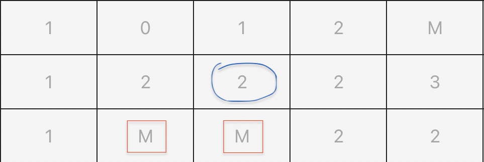

Démineur en JAVA
Description
Ce programme java permet d’exécuter un jeu du Démineur fait en JAVA avec la bibliothèque graphique JavaFX. Le programme est très léger, aucune image n’est utilisée (un drapeau est représenté par la lettre D, tandis qu’une mine sera représentée par la lettre M).
Détails techniques
- version java : 18
- gestionnaire bibliothèque : gradle
- librairie de test : JUnit 5
Rappel des règles du démineur
Selon Wikipédia
Le Démineur (Minesweeper) est un jeu vidéo de réflexion dont le but est de localiser des mines cachées dans une grille représentant un champ de mines virtuel, avec pour seule indication le nombre de mines dans les zones adjacentes.
En effet, le jeu se joue sur une grille, dont le contenu de chaque case est initialement masqué. Un clic sur une case, révéle son contenu. Et à partir de là, 2 possibilitées de résultat :
- la case contient une mine (marqué M dans ma version), vous avez perdu.
- la case contient un chiffre (entre 0 et 8), qui correspont au nombre de case voisine à la notre contenant une mine.

Dans cet exemple, la case entourrée en bleue contient le nombre 2, car elle possède deux voisines contenant une mine (encadrée en rouge).
Vous pouvez également poser des drapeaux (clic droit sur ma version du jeu) sur une case dont vous suspectez que son contenue soit une mine.
Le but du jeu est donc de découvrir toutes les cases du plateau, sans tomber sur une mine, et en marquant ces dernières d’un drapeau.
Utilisation du programme
Pour lancer le jeu, il suffit de télécharger les sources (disponible sur GitHub) et de les compiler avec gradle.
J’utilise personnellement comme IDE IntelliJ, mais vous pouvez également lancer mon code avec n’importe quel IDE.
Une fois compilé et lancé, une grille accompagné de quelques autres éléments apparaissent. La taille de cette grille dépent uniquement de la constante DIMENSION de la classe Demineur qui est par défaut égal à 10 (donc 10*10 = 100 cases)
public static final int DIMENSION = 10;

En bas de cette grille se trouve un bouton “relancer” qui permet de recommencer une partie depuis zéro à n’importe quel moment.
Ainsi que juste à coté écrit le nombre de drapeau qu’il vous reste à poser. (Il y a autant de drapeau que de mine sur le plateau. Le nombre de mine représente 20% du nombre de case sur le plateau.)